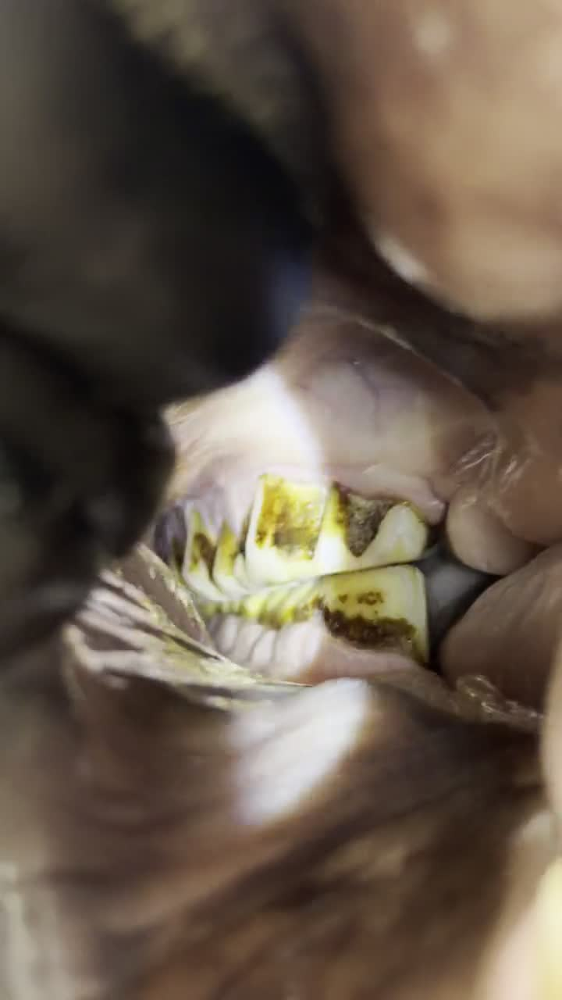

En su haras
El especialista se desplaza hasta el animal. Cero estrés de transporte y cero riesgo de lesión en tránsito.

El Dr. Diego Velásquez se desplaza hasta su haras con el equipamiento completo de diagnóstico y realiza el procedimiento en el propio ambiente del animal.
La mayoría de los problemas dentales del caballo avanzan sin signos visibles. Detectarlos y tratarlos exige formación específica y el instrumental adecuado.
El especialista se desplaza hasta el animal. Cero estrés de transporte y cero riesgo de lesión en tránsito.
Radiología digital de cabeza equina y evaluación intraoral con oroscopia, realizadas directamente en el haras.
Cada procedimiento queda documentado en video y ficha clínica para el acompañamiento evolutivo del caso.
Cada procedimiento exige conocimiento profundo de la anatomía equina. Seleccione un servicio para abrir su ficha clínica.

Trabajo en conjunto con veterinarios clínicos que requieren un referente en odontología y cirugía sinusal equina. El paciente es evaluado en campo, con radiología digital y oroscopia, y usted recibe el informe diagnóstico para la continuidad del caso.
El consultorio se desplaza hasta donde está el caballo. Base en Bogotá y alrededores, con desplazamiento a haras de todo el país.
Casos atendidos en campo. Cada ficha sigue la misma estructura clínica: del problema observado al resultado obtenido.
Caballo con dificultad para masticar, evaluado y tratado directamente en el haras.
Esta ficha se publicará con material clínico real y autorizado por el propietario.
Soy especialista en odontología equina, con formación de posgrado en Colombia. Trabajo directamente en campo porque creo que el mejor diagnóstico se hace en el ambiente del animal.
Cada procedimiento queda registrado para que usted pueda acompañar la evolución del caso. Atiendo haras de cría y caballos deportivos en toda Colombia.
Espacio reservado para el testimonio de un haras de cría.
Espacio reservado para el testimonio de un criadero deportivo.
Espacio reservado para el testimonio de una atención de urgencia.
La mayoría de los problemas de masticación y sinusitis del caballo tienen origen dental. El diagnóstico precoz evita complicaciones y cirugías más complejas.